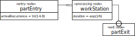

DPMN
The Discrete Event Process Modeling Notation
... is a diagram language for making process design models for discrete event simulation and business process simulation based on Event Graphs and BPMN. It combines the intuitive flowchart modeling style of BPMN with the rigorous semantics provided by the event scheduling arrows of Event Graphs and the event rules of the Object Event Modeling and Simulation (OEM&S) paradigm.
DPMN is the process modeling language of choice in OEM&S. Process models are based on an underlying definition of the types of objects, events and activities they are using. While in the BPMN 2.0 specification, these type definitions are to be provided by an XML Schema, the object, event and activity types of a DPMN process model are defined in an underlying OE class model (in the form of a UML Class Diagram).
DPMN has two types of arrows:
- Event Flow arrows, or Event Scheduling arrows, like in Event Graphs, representing the causation of follow-up events in conceptual process models, corresponding to event scheduling in the case of process design models. For instance, in the Figure above, the two arrows pointing to E2 and E3 are Event Scheduling arrows.
- Resource-Dependent Activity Scheduling arrows with three bars representing a task queue. For instance, in the Figure above, E1 events and A1 activities, as well as A1 and A2 activities, are connected via these arrows.
A DPMN model has a formal semantics in terms of an Abstract State Machine whose state structure is defined by its underlying OE class model and whose transition functions are defined by the event rules of the DPMN process model, which capture causal regularities.
Most recent presentation (March 2023): Business Process Modeling and Simulation with DPMN, AnyLogic and Simio.
The Layers of DPMN
| Layer | Concepts | Diagrams | |
|---|---|---|---|
| Event-Based Simulation |
Event Graphs (Schruben 1983) | Events, Event Scheduling Arrows, Assignments |  |
| Object Event Simulation | Object Event Graphs (Basic DPMN) | + Objects w/ State Changes |  |
| DPMN with Simple Activities | + Activities |  | |
| Activity Networks (DPMN with Resource-Constrained Activities) |
|
||
| Processing Networks (DPMN with Processing Activities) |
|
 |